Aqueous Speciation Calculations
Aqueous speciation calculations use a chemical composition for a solution as input and calculate the distribution of aqueous species and saturation indices for phases. Aqueous speciation calculations include the equations  , 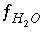
, and
, 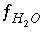
, and  , which are equations for mole balance for elements or element valence states, activity of water, and ionic strength. Mole-balance equations for hydrogen and oxygen are not included, because the total masses of hydrogen and oxygen generally are not known. Instead, the mass of water is assumed to be 1.0 kg or is specified (
-water in the
SOLUTION or
SOLUTION_SPREAD data block) and the total masses of hydrogen and oxygen are calculated in the speciation calculation from the mass of water and the concentrations of all hydrogen and oxygen containing aqueous species.
, which are equations for mole balance for elements or element valence states, activity of water, and ionic strength. Mole-balance equations for hydrogen and oxygen are not included, because the total masses of hydrogen and oxygen generally are not known. Instead, the mass of water is assumed to be 1.0 kg or is specified (
-water in the
SOLUTION or
SOLUTION_SPREAD data block) and the total masses of hydrogen and oxygen are calculated in the speciation calculation from the mass of water and the concentrations of all hydrogen and oxygen containing aqueous species.
If pH, pe, or the master unknown for an element or element valence state is specified to be adjusted to obtain charge balance for the solution,  is included to calculate the value of the master unknown (ln
is included to calculate the value of the master unknown (ln , ln
, ln , or ln
, or ln ) that produces charge balance. In this case, the calculated pH, pe, or total concentration of 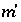
will differ from the input value. If
) that produces charge balance. In this case, the calculated pH, pe, or total concentration of 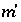
will differ from the input value. If  is included for the master unknown ln
is included for the master unknown ln , the equation
, the equation  is excluded.
is excluded.
If pH, pe, or the master unknown for an element or element valence state is specified to be adjusted to obtain a specified saturation index for a pure phase,  is included to calculate the value of the master unknown (ln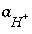
, ln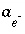
, or ln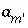
) that produces the target saturation index. In this case, the calculated pH, pe, or total concentration of
is included to calculate the value of the master unknown (ln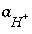
, ln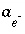
, or ln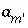
) that produces the target saturation index. In this case, the calculated pH, pe, or total concentration of  will differ from the input value. If
will differ from the input value. If  is included for the master unknown ln
is included for the master unknown ln , the equation 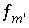
is excluded.
, the equation 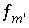
is excluded.
If total alkalinity is specified in the input, the mole-balance equation for alkalinity,  , is included to calculate
, is included to calculate  and the total molality of the element associated with alkalinity (carbon in the default database). If the problem definition contains a mole-balance equation for both carbon [or carbon(+4)] and alkalinity, then the two master unknowns associated with these equations are 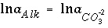
(for the default database files) and
and the total molality of the element associated with alkalinity (carbon in the default database). If the problem definition contains a mole-balance equation for both carbon [or carbon(+4)] and alkalinity, then the two master unknowns associated with these equations are 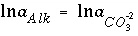
(for the default database files) and  . In this case, the pH will be calculated in the speciation calculation and will not be equal to the input pH.
. In this case, the pH will be calculated in the speciation calculation and will not be equal to the input pH.
For speciation calculations, if the alkalinity mole-balance equation is included in the problem formulation, it is included as the only optimization equation for the solver. All other equations are included as equality constraints. No inequality constraints are included for speciation calculations.
Partial redox disequilibrium is allowed in initial solution calculations, and redox options in the
SOLUTION or
SOLUTION_SPREAD data block affect the aqueous speciation and saturation index calculations. By default, whenever a value of the activity of the electron is needed to calculate the molality or activity of an aqueous species, the input pe is used. If a default redox couple is given (
-redox) or a redox couple is specified for an element (or combination of element valence states) (see
SOLUTION keyword in "Description of Data Input"), then the mass-action expression for each aqueous species of the redox element is rewritten to remove the activity of the electron from the expression and replace it with the activities of the redox couple. For example, if iron (Fe) is to be distributed using the sulfate-sulfide redox couple [S(+6)/S(-2)], then the original chemical reaction for Fe
+3
:
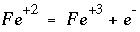
(86)
would be rewritten using the association reaction for sulfide,
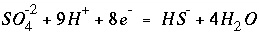
, (87)
to produce the following chemical reaction that does not include electrons:
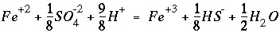
. (88)
The mass-action expression for this final reaction would be used as the mass-action expression for the species  , and the differential for the change in the moles of
, and the differential for the change in the moles of  ,
,  , would also be based on this mass-action expression. However, the original mass-action expression (based on equation 86) is used to determine the mole-balance equations in which the term 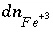
appears, that is, the species 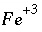
would appear in the mole-balance equation for iron, but not in the mole-balance equations for S(+6) or S(-2). The effect of these manipulations is that ferrous iron, ferric iron, sulfate, and sulfide are in redox equilibrium. Another set of redox elements (for example oxygen and nitrogen) may also be defined to be in equilibrium among themselves, but not necessarily in redox equilibrium with iron and sulfur.
, would also be based on this mass-action expression. However, the original mass-action expression (based on equation 86) is used to determine the mole-balance equations in which the term 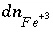
appears, that is, the species 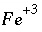
would appear in the mole-balance equation for iron, but not in the mole-balance equations for S(+6) or S(-2). The effect of these manipulations is that ferrous iron, ferric iron, sulfate, and sulfide are in redox equilibrium. Another set of redox elements (for example oxygen and nitrogen) may also be defined to be in equilibrium among themselves, but not necessarily in redox equilibrium with iron and sulfur.
By default, if a saturation-index calculation requires a value for pe (or activity of the electron), then the input pe is used. If a default redox couple has been defined (
-redox), then the dissolution reaction for the phase is rewritten as above to eliminate the activity of the electron and replace it with the activities of the redox couple.
The set of master unknowns may change for redox elements during a calculation. The process, which is termed "basis switching", occurs if the activity of the master species which is the master unknown for a mole-balance equation becomes ten orders of magnitude smaller than the activity of another master species included in the same mole-balance equation. In this case, all of the mass-action expressions involving the current master unknown (including aqueous, exchange, gas, and surface species, and pure phases) are rewritten in terms of the new master species that has the larger activity. An example of this process is, if nitrogen is present in a system that becomes reducing, the master unknown for nitrogen would switch from nitrate, which would be present in negligible amounts under reducing conditions, to ammonium, which would be the dominant species. Basis switching does not affect the ultimate equilibrium distribution of species, but it does speed calculations and avoid numerical problems in dealing with small concentrations.
Initial values for the master unknowns are estimated and then revised according to the strategy described in the previous section. For initial solution calculations, the input values for pH and pe are used as initial estimates. The mass of water is 1.0 kg unless otherwise specified, and the activity of water is estimated to be 1.0. Ionic strength is estimated assuming the master species are the only species present and their concentrations are equal to the input concentrations (converted to units of molality). The activity of the master species of elements (except hydrogen and oxygen) and element valence states are set equal to the input concentration (converted to molality). If the charge-balance equation or a phase-equilibrium equation is used in place of the mole-balance equation for an element or element valence state, then the initial activity of the master species is set equal to one thousandth of the input concentration (converted to molality).
For data input to PHREEQC all options for a speciation calculation--use of an alkalinity equation, charge-balance equation, phase-equilibrium equation, and redox couples--are defined in a
SOLUTION or
SOLUTION_SPREAD data block (see "Description of Data Input").
| Next|| Previous || Top |